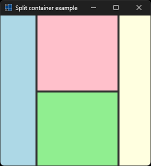

|
xtd
0.2.0
|
split_container.cpp
demonstrates the use of xtd::forms::split_container container.
- Windows

- macOS


- Gnome

#include <xtd/forms/application>
#include <xtd/forms/form>
#include <xtd/forms/split_container>
using namespace xtd::drawing;
using namespace xtd::forms;
public:
form1() {
text("Split container example");
client_size({300, 300});
split_container_left.parent(*this);
split_container_left.dock(dock_style::fill);
split_container_left.panel1().back_color(color::light_blue);
split_container_left.splitter_distance(70);
split_container_right.dock(dock_style::fill);
split_container_right.panel2().back_color(color::light_yellow);
split_container_right.parent(split_container_left.panel2());
split_container_right.splitter_distance(160);
split_container_center.dock(dock_style::fill);
split_container_center.orientation(xtd::forms::orientation::horizontal);
split_container_center.panel1().back_color(color::pink);
split_container_center.panel2().back_color(color::light_green);
split_container_center.parent(split_container_right.panel1());
split_container_center.splitter_distance(150);
}
private:
split_container split_container_left;
split_container split_container_right;
split_container split_container_center;
};
auto main()->int {
application::run(form1 {});
}
static const xtd::drawing::color light_yellow
Gets a system-defined color that has an ARGB value of 0xFFFFFFE0. This field is constant.
Definition: color.h:283
static const xtd::drawing::color light_blue
Gets a system-defined color that has an ARGB value of 0xFFADD8E6. This field is constant.
Definition: color.h:247
static const xtd::drawing::color light_green
Gets a system-defined color that has an ARGB value of 0xFF90EE90. This field is constant.
Definition: color.h:262
static const xtd::drawing::color pink
Gets a system-defined color that has an ARGB value of 0xFFFFC0CB. This field is constant.
Definition: color.h:385
xtd::forms::style_sheets::control form
The form data allows you to specify the box of a form control.
Definition: form.h:21
@ text
The xtd::forms::status_bar_panel displays text in the standard font.
The xtd::drawing namespace provides access to GDI+ basic graphics functionality. More advanced functi...
Definition: actions_system_images.h:11
The xtd::forms namespace contains classes for creating Windows-based applications that take full adva...
Definition: about_box.h:13
Generated on Sun Oct 1 2023 07:46:00 for xtd by Gammasoft. All rights reserved.